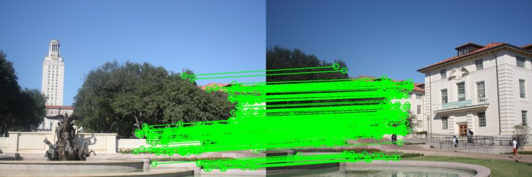
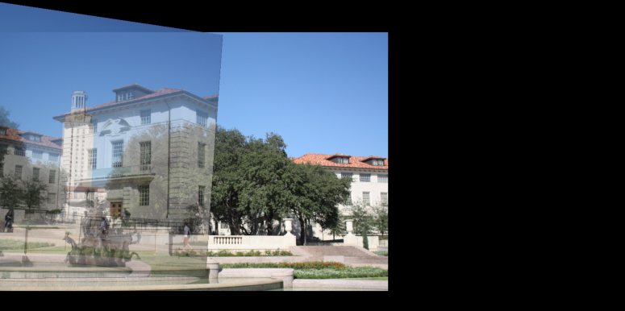
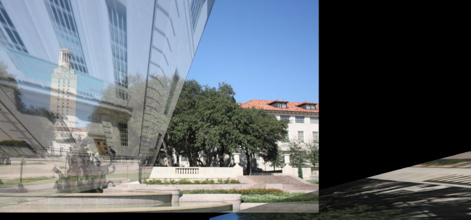
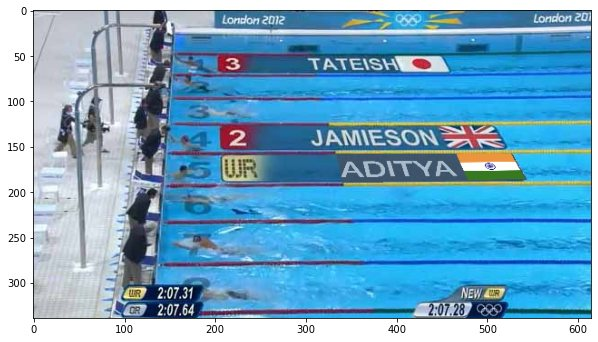

Why SIFT uses a cheap approximation instead of the real Laplacian
The Laplacian of a Gaussian (LoG) is the ideal filter for detecting blobs at a given scale, but it's expensive to compute directly at every scale. It turns out the derivative of a Gaussian with respect to its own scale, ∂G/∂σ, is proportional to the Laplacian: ∂G/∂σ = σ·L(x,y). Approximating that derivative with a simple difference of two Gaussians at nearby scales, D(x,y,σ) = G(x,y,kσ) − G(x,y,σ), gives L(x,y) ≈ D(x,y,σ) / ((k−1)σ²) — a subtraction instead of a second derivative, which is why SIFT calls it the Difference of Gaussians (DoG).
Refining a keypoint's exact location
Once a candidate keypoint is found, its position is refined by fitting a second-order Taylor expansion of the DoG function around it and solving for the offset that sits at the peak: Δx = −H−1∇f, where H is the local Hessian. This pulls the keypoint to sub-pixel, sub-scale accuracy rather than snapping to the nearest sampled pixel, and if the refined point lands closer to a neighboring pixel or scale level than to the original guess, the process repeats from there until it converges — which also naturally filters out unstable, poorly localized keypoints.
Matching features and stitching two images together
The actual pipeline: detect SIFT keypoints and descriptors in both images, match descriptors with a ratio test to get an initial (noisy) set of correspondences, estimate a homography from a random sample of those correspondences via direct linear transform (DLT, solved with SVD), then run RANSAC — repeatedly sampling, fitting, and counting inliers — to find the homography that most of the correspondences actually agree with. The final image is produced by inverse-warping through that homography with bilinear interpolation.
def run_sift(image, num_features):
gray = cv2.cvtColor(image, cv2.COLOR_RGB2GRAY)
sift = cv2.SIFT_create(nfeatures=num_features)
keypoints, descriptors = sift.detectAndCompute(gray, None)
return keypoints, descriptors
def find_sift_correspondences(kp1, des1, kp2, des2, ratio):
matches = []
for i in range(des1.shape[0]):
dists = np.linalg.norm(des2 - des1[i], axis=1)
idx = np.argsort(dists)
best, second = idx[0], idx[1]
if dists[best] < ratio * dists[second]:
matches.append((kp1[i], kp2[best]))
return matches
def compute_homography(correspondences):
A = []
for (x1, y1), (x2, y2) in correspondences:
A.append([-x1, -y1, -1, 0, 0, 0, x2*x1, x2*y1, x2])
A.append([0, 0, 0, -x1, -y1, -1, y2*x1, y2*y1, y2])
A = np.array(A)
_, _, Vt = np.linalg.svd(A)
return Vt[-1].reshape(3, 3)
def ransac(correspondences, num_iterations, num_sampled_points, threshold):
best_H, best_inliers, best_outliers = None, [], []
correspondences = list(correspondences)
for _ in range(num_iterations):
if len(correspondences) < num_sampled_points:
continue
idx = np.random.choice(len(correspondences), num_sampled_points, replace=False)
sample = [correspondences[i] for i in idx]
H = compute_homography(sample)
inliers, outliers = compute_inliers(H, correspondences, threshold)
if len(inliers) > len(best_inliers):
best_H, best_inliers, best_outliers = H, inliers, outliers
return best_H, best_inliers, best_outliers
Stitching the same image pair without RANSAC visibly breaks the panorama — a small number of bad correspondences (mismatched features) is enough to skew the whole homography. That's the direct, visual argument for why robust estimation isn't just a theoretical nicety.


Compositing new content into a photo via homography
The same DLT machinery works in reverse: given just four corner correspondences between a rectangular source image and a target region in a photo, you can solve for the homography that warps the source into that region — used here to insert a name and flag into an Olympic pool broadcast photo, in the same spot a real broadcaster's graphics overlay would sit.
h, w = name_img.shape[:2]
correspondence = [
([0, 0], [200, 158]), # top-left
([0, h], [200, 190]), # bottom-left
([w, 0], [560, 157]), # top-right
([w, h], [560, 187]), # bottom-right
]
def stitch_image_given_H_new(pool_image, name_flag_image, homography):
h, w = pool_image.shape[:2]
stitched = pool_image.astype(np.float32).copy()
for y in range(h):
for x in range(w):
p2 = np.linalg.inv(homography) @ np.array([x, y, 1.0])
p2 = (p2 / p2[2])[:2]
val = interpolate(name_flag_image, p2)
if 0 <= p2[0] < name_flag_image.shape[1] and 0 <= p2[1] < name_flag_image.shape[0]:
stitched[y, x] = val
return stitched.astype(np.uint8)
Reconstructing 3D points from two camera views
Given point correspondences between two images of the same scene from different viewpoints, the eight-point algorithm estimates the essential matrix (via SVD, with the smallest singular value zeroed out to enforce its rank-2 structure), decomposes it into a relative rotation and translation between the two cameras, then triangulates each point's depth in both views and reconstructs its 3D position.
def compute_essential_matrix(correspondences):
A = []
for (x1, y1), (x2, y2) in correspondences:
A.append([x2*x1, x2*y1, x2, y2*x1, y2*y1, y2, x1, y1, 1])
A = np.array(A)
_, _, Vt = np.linalg.svd(A)
E = Vt[-1].reshape(3, 3)
U, S, Vt = np.linalg.svd(E)
S[-1] = 0
return U @ np.diag(S) @ Vt
def compute_translation_rotation(essential_matrix):
U, S, Vt = np.linalg.svd(essential_matrix)
W = np.array([[0, -1, 0], [1, 0, 0], [0, 0, 1]])
T = U[:, 2]
R = U @ W @ Vt
if np.linalg.det(R) < 0:
R = -R
return T, RReprojecting the reconstructed 3D points back into the second image and comparing against the real 2D correspondences gave a 2.7% mean reprojection error — a direct numerical check that the whole pipeline (matrix estimation, decomposition, triangulation) was self-consistent.